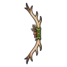

กองกระดูกแตกตัว
มอนธาตุอมตะ Lv 34–48
เจอที่
| แมพ | โซน | Lv | ภูมิภาค |
|---|---|---|---|
| สุสานใต้ดิน ชั้น 1 | 34–39 | ป่ากองไฟ | |
| สุสานใต้ดิน ชั้น 2 · ห้องราชา | 44–48 | ป่ากองไฟ | |
| หอรากมืด (Dark Root) | ห้องกระดูก | 24–33 |
ค่าสถานะตามเลเวล
| Lv | HP | ATK | DEF | MDEF | EXP | Job |
|---|---|---|---|---|---|---|
| 34 | 4,596 | 58–86 | 12 | 7 | 48 | 36 |
| 41 | 7,678 | 77–115 | 15 | 9 | 56 | 42 |
| 48 | 12,049 | 89–134 | 17 | 10 | 64 | 48 |
ตีด้วยธาตุไหนดี
แรงขึ้น: ศักดิ์สิทธิ์ ×1.5 ไฟ ×1.25
เบาลง: พิษ ×0 มืด ×0 อมตะ ×0
วัตถุดิบที่ดรอป
| ของ | โอกาส | |
|---|---|---|
| มัดกระดูกเก่า | 55% | 1 ชิ้น (15% ได้ 2) |
อุปกรณ์ที่ดรอป (6)
| ของ | โอกาส |
|---|---|
| 0.25% | |
| 0.25% | |
| ชุดพรานหมาป่า (เสื้อ) | 0.15% |
| ชุดพรานหมาป่า (กางเกง + รองเท้า) | 0.15% |
 ธนูเขากวางป่า | 0.12% |
| ชุดพรานหมาป่า (สร้อยเขี้ยวหมาป่า) | 0.05% |
สกิล
ทุบพื้น (Lv 25+) · ทุบพื้น (Lv 60+) · ดึง (Lv 60+)